Product Design · 2022
Leaves Water System
A fence that quietly collects and redistributes rainwater
Leaves Water System is a modular, multifunctional outdoor structure shaped by the natural environment it was conceived for — the park of the Province of Bologna, at Villa Smeraldi.
The fence — beyond delimiting space — embeds a watering mechanism for the plants growing around it. Rainwater is collected through the basin placed as a cover of the agricultural equipment, gathered in a barrel and channeled into a pipe along the perimeter of the fence. Valves distribute it to the plants that receive what they need to grow.
Because the structure stays light, it doesn't need foundations or plinths — a steel base supports it, holding plant pots and anchoring to the ground via pickets. Their combined weight balances the column and keeps it from sinking.

Section 01 · Park System Layout
Re-fencing the Museum of Rural Civilisation.
After several inspections we analysed the critical points of the park. We concentrated on the absence and state of abandonment of the agricultural equipment of the Museum of Rural Civilisation present in the Villa of the park.
The 1980s fencing — stakes planted in the ground and plastic strings — was dangerous for children who could access the equipment, did not protect the equipment from free-roaming animals, and did not intrigue the visitors. The intent: protect the equipment and at the same time enhance it, giving a new life to objects that carry the history of the park with them.
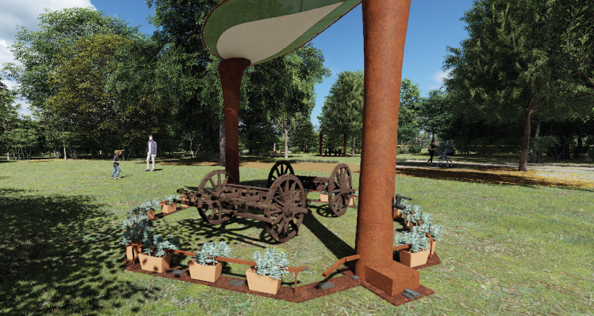
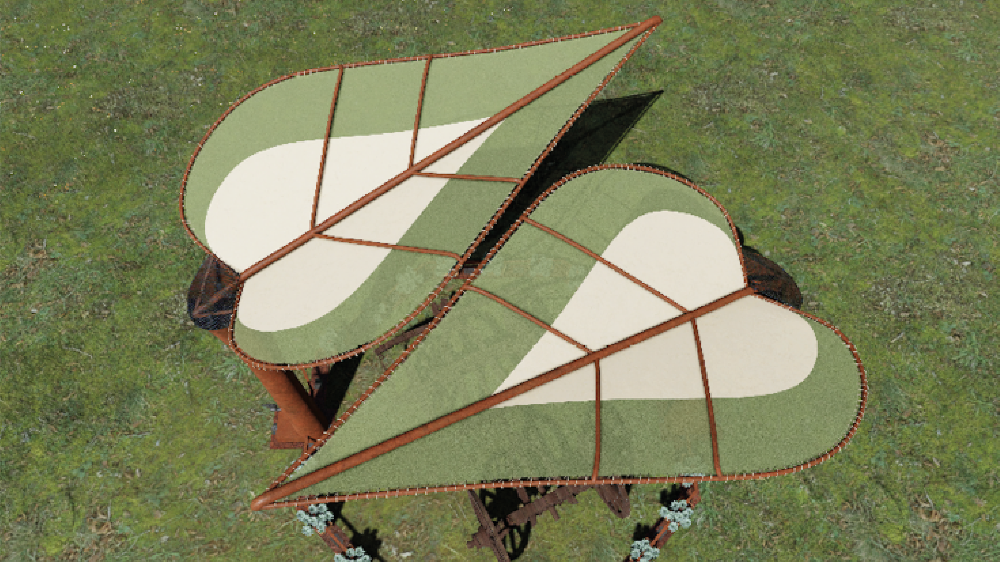
Section 02 · Divergence Maps
Diverge first. Converge on the user.
The process opens with a divergence phase — producing many possible ideas for action — followed by a second phase converging on the concepts that fit user needs, using Human-Centred Design methods.
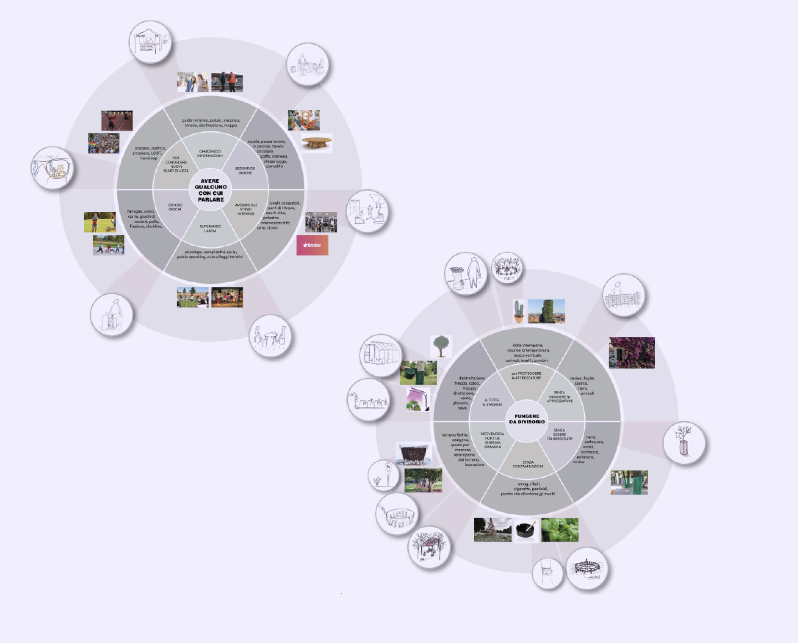
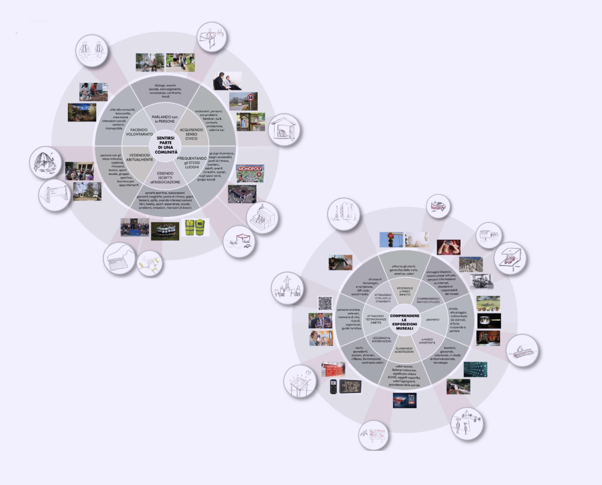
Section 03 · Construction Details
Interlocking parts. No permanent foundation.
Three core joints carry the design: the interlocking lower octagonal part, the tubular base containing the PVC pipe, and the contact joint between base and the supporting tubular. Together they let the structure sit on the ground without sinking — and let it be relocated.
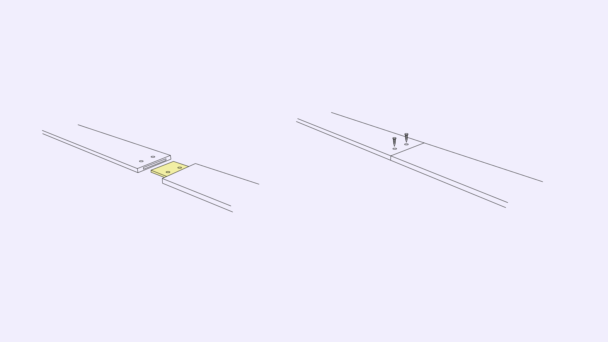
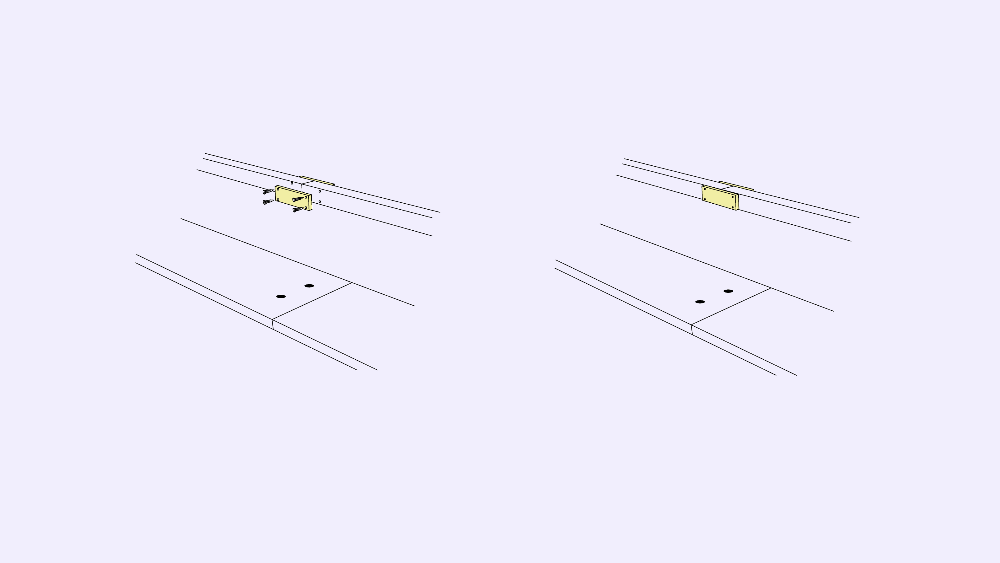
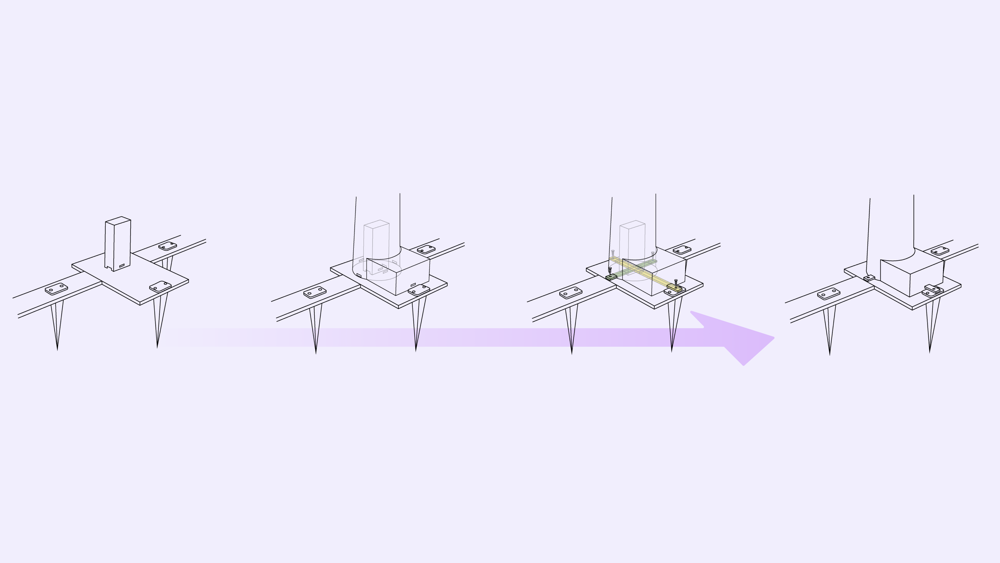
Section 04 · Exploded View & Ergonomics
Faucet at hand. Control unit at reach.
Faucet height — ergonomic study of the correct height for the water-control faucet, accessible to different user types (standing adults, seated visitors, children).
Control-unit height — analysis of the control-unit positioning for optimal usability — readable from a comfortable posture without bending or stretching.
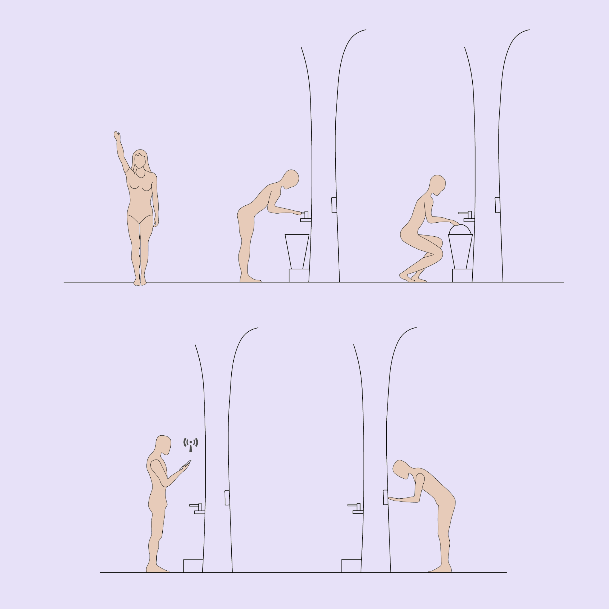
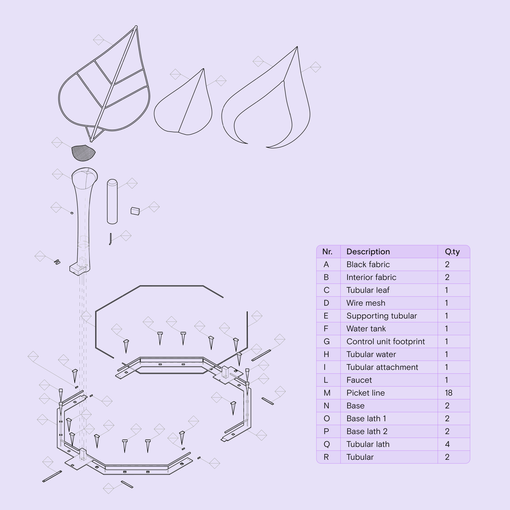
Section 05 · Prototype
Clay, paper-mâché, iron wire, spray paint.
Various materials were used to build the model: clay for the tubular shapes, paper mâché and cardboard for the fence, breathable canvas for the fabric and a more robust cloth for the central part that holds rainwater.
Metal tubulars were made with iron wire, then the parts were coloured using acrylics and spray paint. The structure sits on a 2 cm thick wood base, dusted with a green powder to simulate grass and soil.
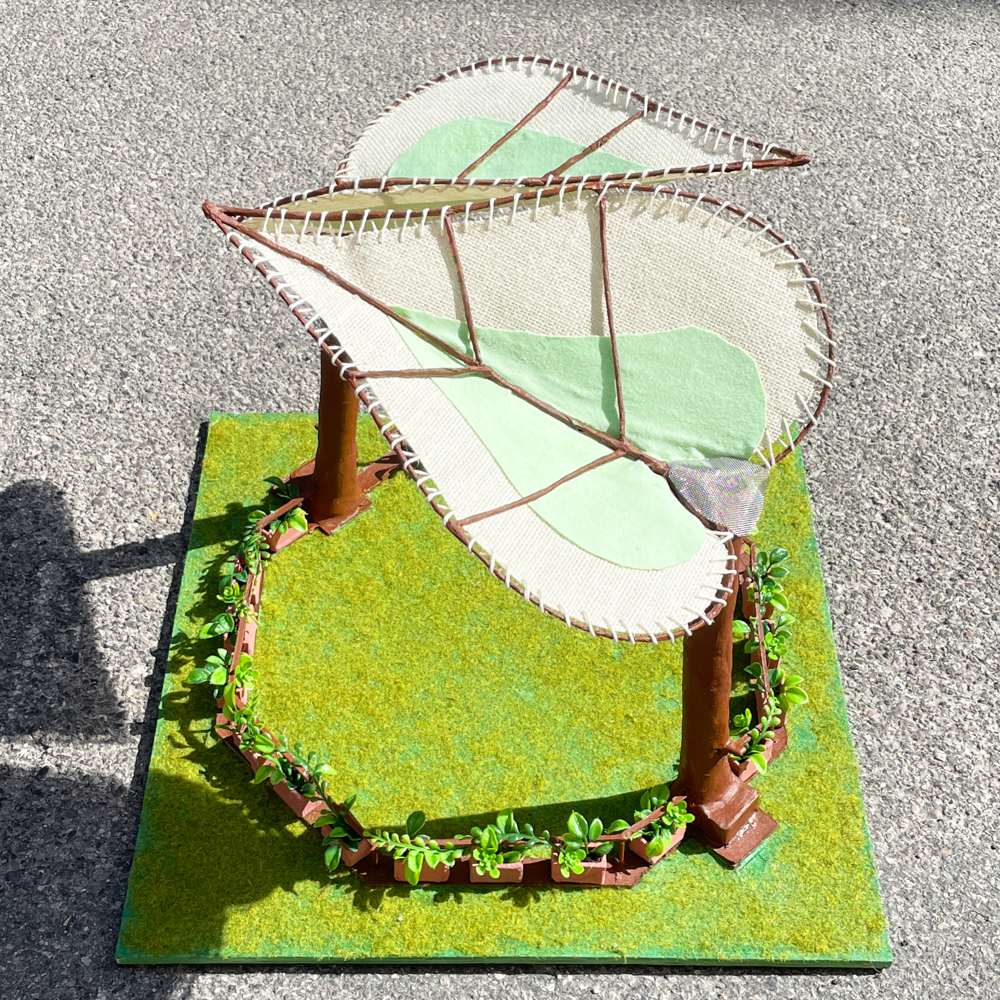
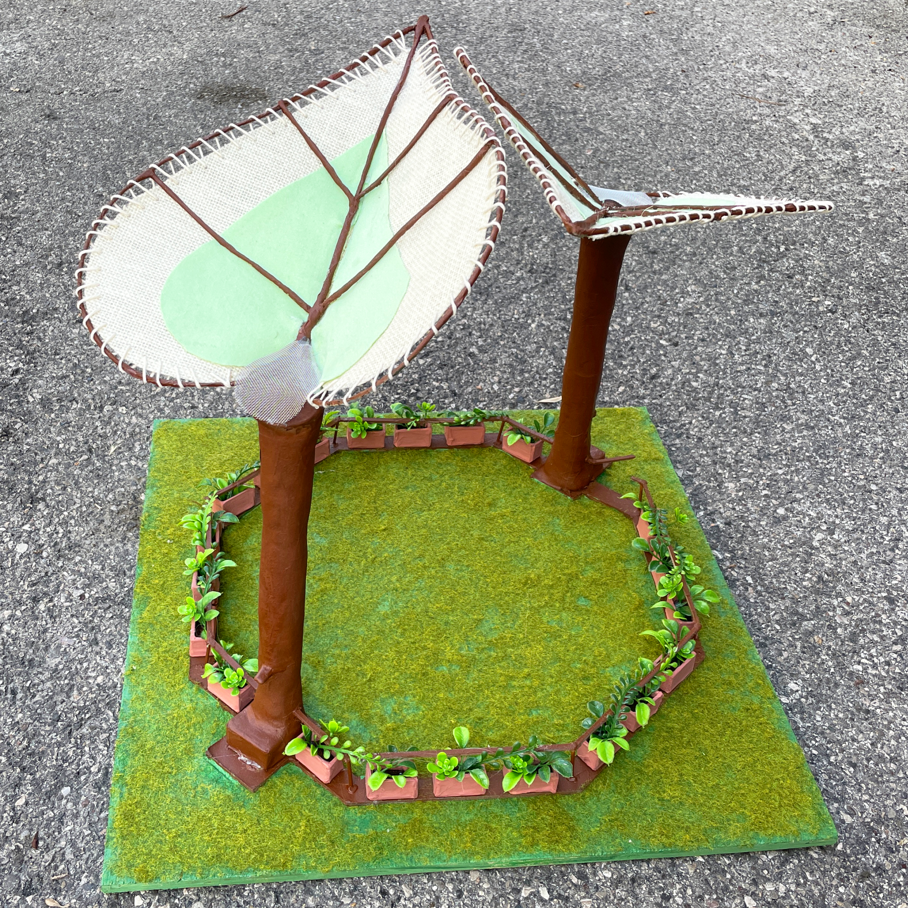
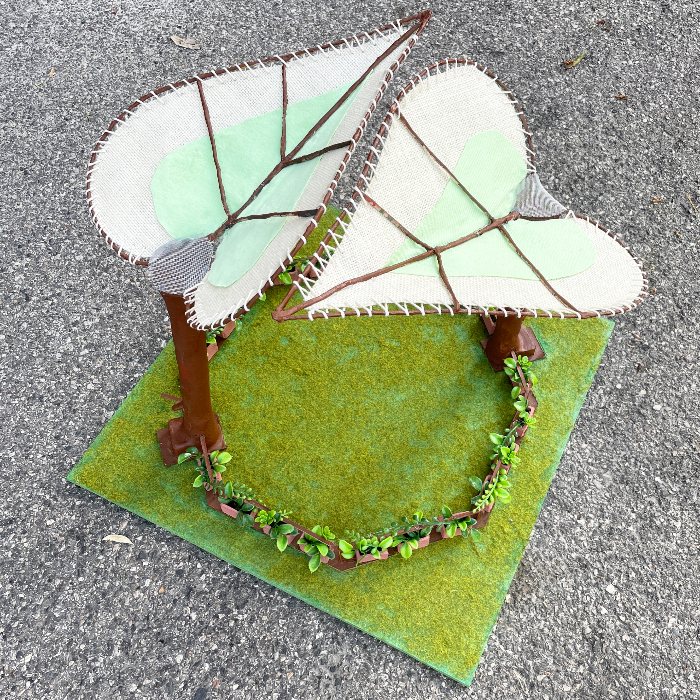
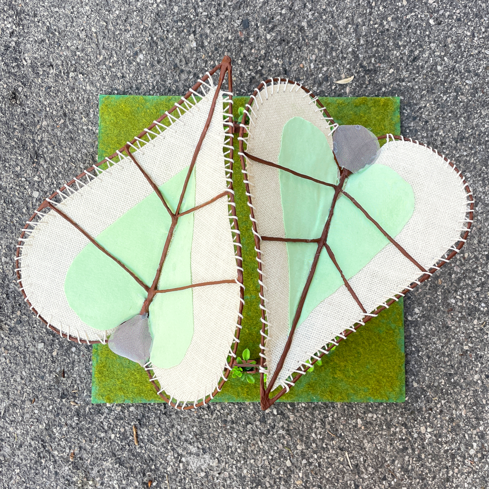